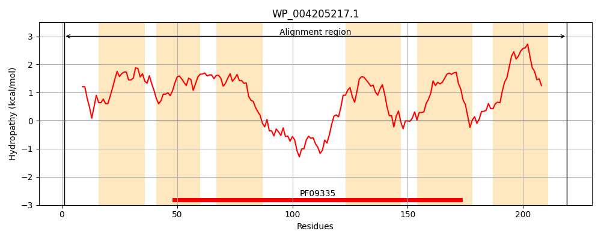
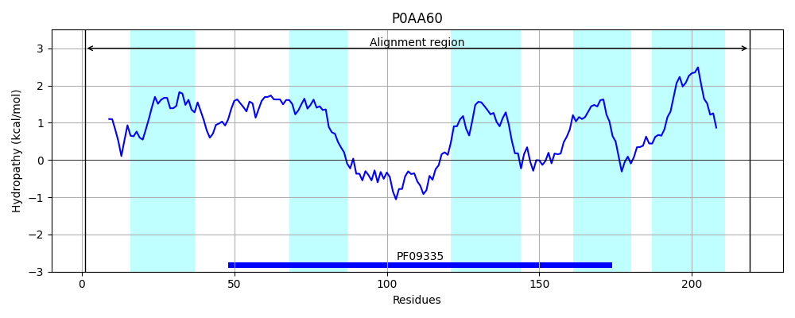
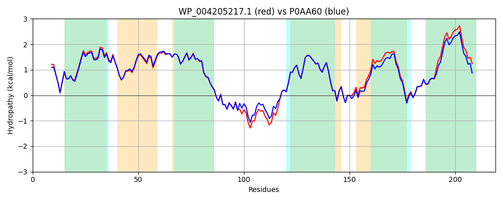

Hit Accession: P0AA60
Hit TCID: 9.B.27.2.1
Hit Description: gnl|BL_ORD_ID|8643 gnl|TC-DB|P0AA60|9.B.27.2.1 Inner membrane protein yghB - Escherichia coli (strain K12).
Mach Len: 219
e:0.000000
Query TMS Count : 6
Hit TMS Count: 5
TMS-Overlap Score: 5.300000
Predicted Substrates:None
BLAST Alignment:
Score: 1039 , Bit scores: 404 bits, E-value: 7.5e-146, Alignment length: 219, Percentage identity: 90
Query: 1 MVVIQEIVAALWQHDFAALANPHVVGVVYLVMFATLFLENGLLPASFLPGDSLLLLAGALIAKGVMDFVPTIAILTAAASLGCWLSYVQGRWLGNTQTVKGWLAHLPHKYHQRATCMFDRHGLLALLAGRFLAFVRTLLPTMAGISGLPNRRFQFFNWLSALLWVGVVTGLGYALSMIPFVKRHEDQVMTCLMILPIALLLAGLLGTLFVVIKKKYCSA 219
M VIQ+I+AALWQHDFAALA+PH+V VVY VMFATLFLENGLLPASFLPGDSLL+LAGALIA+GVMDF+PTIAILTAAASLGCWLSY+QGRWLGNT+TVKGWLA LP KYHQRATCMFDRHGLLALLAGRFLAFVRTLLPTMAGISGLPNRRFQFFNWLS LLWV VVT GYALSMIPFVKRHEDQVMT LMILPIALL AGLLGTLFVVIKKKYC+A
Sbjct: 1 MAVIQDIIAALWQHDFAALADPHIVSVVYFVMFATLFLENGLLPASFLPGDSLLILAGALIAQGVMDFLPTIAILTAAASLGCWLSYIQGRWLGNTKTVKGWLAQLPAKYHQRATCMFDRHGLLALLAGRFLAFVRTLLPTMAGISGLPNRRFQFFNWLSGLLWVSVVTSFGYALSMIPFVKRHEDQVMTFLMILPIALLTAGLLGTLFVVIKKKYCNA 219 | Protein Hydropathy Plots: |
|---|
|  |  |
Pairwise Alignment-Hydropathy Plot:
|
|---|
|  |